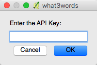
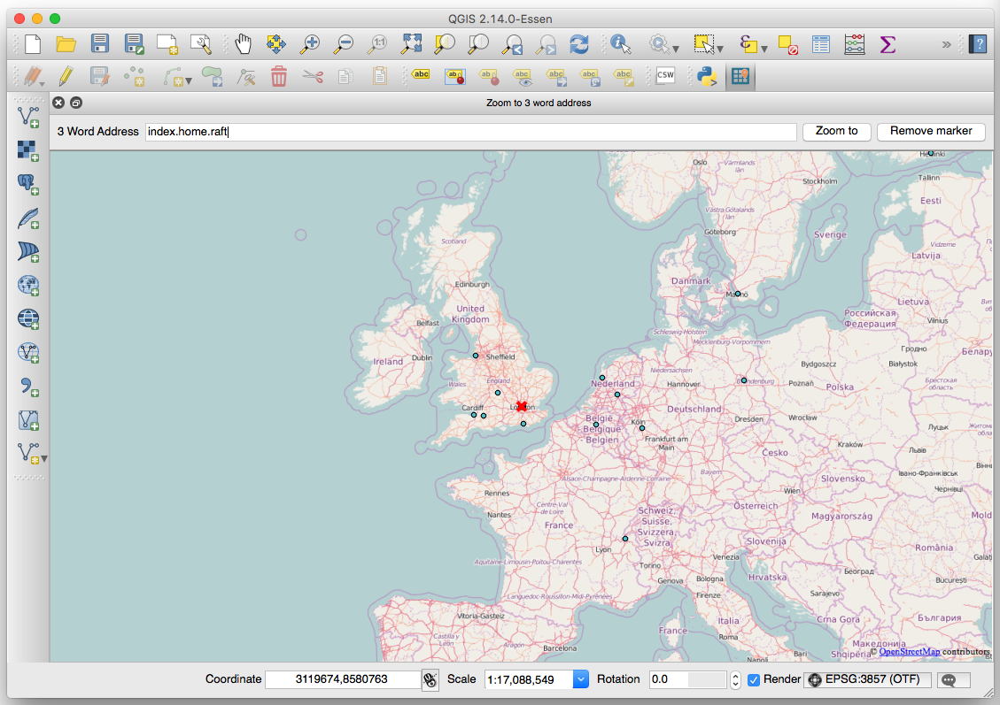
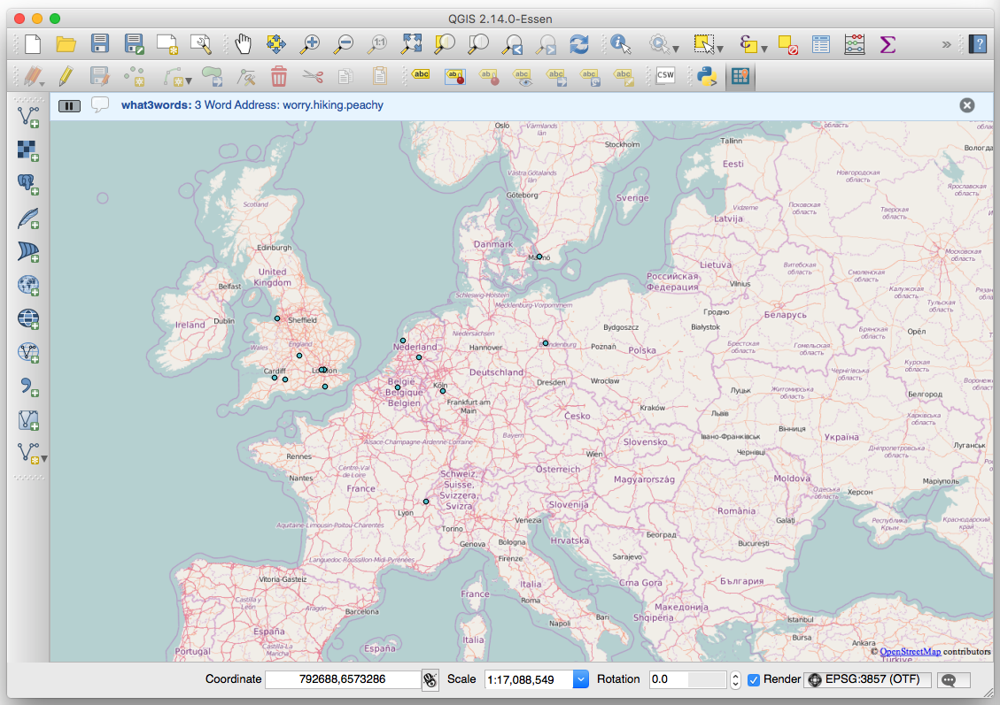

QGIS what3words Plugin¶
Tools to use what3words 3 word addresses in QGIS
The plugin contains 3 tools:
- zoom to 3 word address tool
- 3 word address map tool
- add 3 word addresses processing algorithm
Plugin Configuration¶
To use what3words, you’ll need an API key, which can be signed up for here. Once you have an API key, this should be configured in the plugin via the Plugins > what3words > Set API Key menu item.
If you haven’t configured an API key, you will be prompted to enter one when calling any of the tools the plugin provides.
Zoom to 3 Word Address Tool¶
The Zoom to 3 word address tool is activated via the Plugins > what3words > Zoom to 3 word address menu item and allows you to enter a 3 word address, which should be specified as word.word.word. If valid, the map will display and zoom to the 3 word address.
3 Word Address Map Tool¶
The what3words map tool is activated via the Plugins > what3words > what3words map tool menu item. When activated, clicking anywhere on the QGIS map canvas with your mouse will display the 3 word address that corresponds to the mouse position in the QGIS message bar.
Add 3 word Addresses Processing Algorithm¶
The plugin adds an additional processing algorithm to QGIS which allows you to determine the 3 word address for any points in an updatable layer and add them as a new field called 3WordAddr. The algorithm is available in the QGIS Processing Toolbox under what3words tools > what3words tools > Add 3 word address field to points layer.